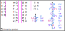

Introduction
Eberban is a logical constructed language aimed to satisfy the following goals :
- being simple : the Eberban grammar allows to manipulate predicates with particles in a way that is close to the higher-order logic it translates into, while abstracting away the verbosity of explicitely providing variables as arguments of predicates.
- being regular : valid sentences are syntaxicaly unambiguous. Most grammar rules rely on particles which are organised in families, each starting with a unique prefix. Many additional patterns are shared between particles and predicate words to help learning groups of related words.
- being expressive : the grammar and core vocabulary focus on providing a simple framework, on top of which can be built abstractions, complex concepts and tools. Since those are built in Eberban itself, users can create their own tools and abstractions to express entirely new concepts.
Eberban take inspirations from Lojban and other logical languages, but try novel approaches to satisfy the above goals.
Most resources are hosted on GitHub pages, such as :
- parsers, which transform text into a tree structure, that can also be visualized as nested boxes.
- a dictionnary allowing to search words and their definitions.
- learning resources to discover the language grammar and concepts.
If you would like to get involved, please also consider joining our Discord server.
Morphology
The morphology of Eberban is composed of 16 consonants (n, r, l, m, p, b, f,
v, t, d, s, z, c, j, g, k), 5 vowels (i, e, a, o, u) and finally the
letter h, for a total of 22 letters. Among the consonants, n, r and
l are designated as (alveolar) sonorants, and play an important role in
Eberban's morphology. The alphabetical order is hnlrmpbfvtdszcjkgieaou.
The same letter appearing multiple times in a row is considered identical to the
letter not being repeated, but can informally be used in written media to convey
length of sounds in speech.
Words are usually written separated by spaces, however this is not mandatory. While removing spaces, however, it might be required to add the word boundary marker symbol ' in some places. More than one marker in a row is not allowed. Letters are chained one after the other without spaces to form words which are divided into multiple categories based on their structure.
Eberban text is usually written all lowercase (outside of foreign text quotes),
but uppercase can informally be used in written media to convey volume (such as
yelling). Outside of ' no punctuation symbol is used, and any other
character is considered a space, but informally punctuation from other languages
can be used (for exemple by writing " around quotes, or ending sentences with
.).
Word types
Particles
Particles are words exerting grammatical functions. They start with a single non-sonorant consonant, followed only by vowels and h, like pa, mio or tiho. Particles are themselves categorized into families having identical grammar but different meanings. Those families are usually designated using a particle in capital letters (like MI or VEI), which is by convention the first particle in this family in alphabetical order.
All other words are predicate words and express intrinsic meanings such as "cat", "language" or "teach". They are grouped into the following categories :
Roots
Roots are the building blocks of the language and express meanings that would be hard or too long to convey otherwise. They can either :
- start with a single non-sonorant consonant followed by a mix of vowels and at least one sonorant or medial consonant pair, like ban, mana, cuina or marne.
- start with a valid initial consonant pair followed by a mix of vowels and any number of sonorants or medial consonant pairs (even none), like bju, cpena or djin.
A sonorant can appear only between 2 vowels or at the end of the root, while a medial pair can appear only between 2 vowels, but not at the end.
The following chart shows initial pairs in light blue, medial pairs in pink, and invalid pairs in dark gray (with a short explanation for why they are invalid):

Borrowings
Borrowings allow importing foreign words or names. They are prefixed by the vowel u, and have more relaxed rules about consonants than native eberban words. Mainly, they can contain consonant triplets which must obey the following rules:
- Consonant pairs must either be initial pairs, medial pairs or sonorant
- consonant.
- Consonant triplets C1C2C3 are valid if C1C2 is a medial pair and C2C3 is an initial pair.
- Alternatively, consonant triplets can be a sonorant followed by an initial pair.
After the u prefix the borrowing can start by a vowel, a single consonant, a initial or medial consonant pair, a consonant triplet or h If this first letter is an u it must be prefixed with a ' to separate it from the the prefix.
Borrowings must end with a vowel, or a vowel followed by a single consonant (not only sonorants). In written media, borrowings must be followed by either spaces or a word boundary marker, which is realized in speech by pausing after the borrowing to properly separate it from the following word.
Similarly, the initial u must be either preceded by spaces or a word boundary marker, and realized orally as either a pause or a glottal stop.
Freeform variables
Freeform variables allow defining predicates with a custom name. They follow the same morphology as borrowings but use the i prefix instead of u.
Compounds
Compounds allow making new words from multiple other kind of words. They start by either e, a or o and follow the same rule as the u of borrowings. Their structure will be detailed later in this book.
Example
With spaces : pa za umia tsen eberban
Without spaces : paza'umia'tsen'eberban
Particles : pa, za
Borrowing : umia
Freeform variable: ibar
Root : tsen
Compound : eberban
Reasoning
Outside of borrowings and assignable names, encountering a non-sonorant consonant or a word boundary marker means it is the start of a new word; unless it the first letter of a medial consonant pair which cannot be misunderstood for the start of a new word. Word boundary markers or spaces allow to prevent them from "merging" into adjacent words.
These simple rules prevent any ambiguity of word boundaries, which is called a Self-Segregating Morphology.
Phonology
| Letter | IPA | Description |
|---|---|---|
| h | [h] | a glottal aspirant |
| n | [n], [ŋ] | a dental or velar nasal |
| r | [r], [ɹ], [ɾ], [ʀ], [ʁ] | a rhotic sound |
| l | [l] | a lateral approximant |
| m | [m] | a bilabial nasal |
| p | [p] | an unvoiced bilabial stop |
| b | [b] | a voiced bilabial stop |
| f | [f] | an unvoiced labiodental fricative |
| v | [v] | a voiced labiodental fricative |
| t | [t] | an unvoiced dental/alveolar stop |
| d | [d] | a voiced dental/alveolar stop |
| s | [s] | an unvoiced alveolar sibilant |
| z | [z] | a voiced alveolar sibilant |
| c | [ʃ], [ʂ] | an unvoiced coronal sibilant |
| j | [ʒ], [ʐ] | a voiced coronal sibilant |
| k | [k] | an unvoiced velar stop |
| g | [ɡ] | a voiced velar stop |
| i | [i] | a front close vowel |
| e | [ɛ], [e] | a front mid vowel |
| a | [a], [ɑ] | an open vowel |
| o | [o], [ɔ] | a back mid vowel |
| u | [u] | a back close vowel |
The word boundary marker ' is usually realized as a pause. However before a vowel-initial word (borrowings, freeform variables and compounds) it can be realized as a glottal stop [ʔ] instead.
Consecutive vowels are separated by hiatuses, but glides like [j] and [w] are allowed respectively alongside or instead of [i] and [u].
Where spaces are allowed, a speaker or writter can express hesitation by using one or more of the letter n surrounded by spaces, which is realized as [n̩].
In speech, the schwa sound [ə] can be used in between consonants of a pair if the speaker has trouble uttering the pair as-is. It has no written equivalent.
Example
Sentence : pa za umia tsae eberban
Pronounciation : [pa za ʔumi.a tsa.e ʔeberban]
Logic framework
Eberban is based on a custom Higher-order Logic (HOL) and tries to stay pretty close to expressions in such logic while being targeted for human speech.
Eberban grammar allow the speaker to manipulate predicates. They are functions that take arguments as inputs and outputs a truth value which can be true, false or unknown/undefined. They are introduced by predicate words or created from other predicates using Eberban grammar.
Arguments are not filled using predicate words directly and there is no words that directly represents them. Instead some particles allows to select which arguments are going to be used for various operations on predicates such as connecting them with each other. Arguments are typed, and can either represent predicates or non-predicates which are called atoms.
The first of those arguments is handled automatically by the grammar and is called the context argument. It is used to carry information between predicates without verbosity for speakers to implement things such as tenses.
Other arguments are represented using the vowels e, a, o, u in this order. They are used in definitions but also in some families of particles related to argument selection. They are called explicit arguments (to exclude the implicit context argument), and we call arity (N-ary) the number of explicit arguments.
Here is an exemple of a simple predicate :
mian
\[ \text{mian}(c,e) = \text{[$e$ is a cat in context $c$]} \]
Given $(c), $(e):
$(e) is a cat in context $(c).$(c) and $(e) are argument that will be provided when used in a sentence.
In future explanations we'll omit the context argument outside of logical notation to be shorter, unless the context argument is the focus of the explanation.
Chaining
When 2 predicates are strung one after the other they form a new predicate, which has the same arguments as the left predicate.
Every predicate has a default chaining behavior which dictates how 2 predicates are connected together. If the left predicate has intransitive behavior then its E place will interact with the right predicate. Otherwise if the left predicate has transitive behavior then the A place is used.
For root words, they have transitive behavior if they end with a vowel, while they have intransitive behavior if they end with n, r or l.
Particles acting as predicates have different rules which will be explained later.
When chaining predicates the new predicate inherits the chaining behavior of the left predicate.
Atom argument chaining
If the chaining argument is an atom argument, then the variable filling this argument also fills the E argument of the right predicate. The context argument is automatically shared between left and right predicates.
mian blan
\[ \begin{align} \text{mian}(c,e) &= \text{[$e$ is a cat]} \\ \text{blan}(c,e) &= \text{[$e$ is beautiful]} \\ \ \\ \text{blan}_1(c,e) &= \text{blan}(c,e) \\ \ \\ \text{mian}_1(c,e) &= \text{mian}(c,e) \wedge \text{blan}_1(c,\color{magenta}{e}) \end{align} \]
Given $(c),$(e):
$(e) is a cat and is beautiful.
If the right predicate has more than one explicit argument then it is wrapped in a predicate having only one explicit argument, and every other arguments are filled with existential variables. The process of wrapping the predicate and creating existential variables to have the correct arity is called the arity mismatch resolution, and is a key aspect of Eberban grammar to reduce verbosity in simple cases.
mian buri
\[ \begin{align} \text{buri}(c,e,a) &= \text{[$e$ eats $a$]} \\ \ \\ \text{buri}_1(c,e,a) &= \text{buri}(c,e,a) \\ \color{magenta}{\text{buri}^w_1(c,e)} &= \color{magenta}{\exists a. \text{buri}_1(c,e,a)} \\ \ \\ \text{mian}_1(c,e) &= \text{mian}(c,e) \wedge \text{buri}^w_1(c,e) \end{align} \]
Given $(c),$(e):
$(e) is a cat and there exist an $(a) such that $(e) eats $(a).
$(e) is a cat that eats something.
Predicate argument chaining
If the chaining argument is a predicate argument, then the right predicate is stated to be equivalent to the predicate represented by the argument. If the predicate argument and right predicate don't match in arity then the arity mismatch resolution is performed. The right predicate is not stated as is, and will be instanciated by the left predicate (according to its definition). The left predicate will be able to instanciated multiple times and with any (correctly typed) arguments, including the context argument.
tce mian
\[ \begin{align} \text{tce}(c,e,A) &= \text{[$e$ is a set of things that satisfies $A$ (1-ary)]} \\ \ \\ \text{mian}_1(c,e) &= \text{mian}(c,e) \\ \ \\ \text{tce}_1(c,e,A) &= tce(c,e,A) \color{magenta}{\wedge A \Leftrightarrow \text{mian}_1} \end{align} \]
Given $(c), $(e), $(A):
$(e) is a set of things that satisfies $(A), and $(A) is equivalent to mian.
$(e) is a set/group of cats.
gli mian
\[ \begin{align} \text{gli}(c,e,A) &= \text{[$e$ is happy about $A$ (0-ary) being true]} \\ \ \\ \text{mian}_1(c,e) &= \text{mian}(c,e) \\ \text{mian}^w_1(c) &= \exists e. \text{mian}_1(c,e) \\ \ \\ \text{gli}_1(c,e,A) &= gli(c,e,A) \wedge A \Leftrightarrow \text{mian}^w_1 \end{align} \]
Given $(c), $(e), $(A):
$(e) is happy about $(A) being true, and $(A) is equivalent to \(\text{mian}^w_1\).
$(e) is happy that there exist a cat.
Longer chains
When more than 2 predicates are strung one after the other they are chained in
right-grouping order (A (B (C D))).
mi dona tcu mian
\[ \begin{align} \text{mi}(c,e) &= \text{[$e$ is a speaker]} \\ \text{dona}(c,e,a) &= \text{[$e$ likes $a$]} \\ \text{tcu}(c,e,A) &= \text{[$e$ is the set of all things that satisfy $A$ (1-ary)]} \\ \ \\ \text{mian}_1(c,e) &= \text{mian}(c,e) \\ \ \\ \text{tcu}_1(c,e,A) &= \text{tcu}(c,e,A) \wedge A \Leftrightarrow \text{mian}_1 \\ \text{tcu}^w_1(c,e) &= \exists A. \text{tcu}_1(c,e,A) \\ \ \\ \text{dona}_1(c,e,a) &= \text{dona}(c,e,a) \wedge \text{tcu}^w_1(c,a) \\ \text{dona}^w_1(c,e) &= \exists a. \text{dona}_1(c,e,a) \\ \ \\ \text{mi}_1(c,e) &= \text{mi}(c,e) \wedge \text{dona}^w_1(c,e) \end{align} \]
Given $(c), $(e):
$(e) is a speaker that likes all cats.
Explicit binding (VI/FI/SI)
Left atom place selection
When the speaker wants to interact with an argument that normal chaining doesn't select (due to transitivity, or to interact with O or U arguments), it is possible to attach additional bindings using the VI family of particles after a predicate, followed by another (chain of) predicate(s), which is closed by the vei particle to return to the previously seen chaining behavior.
vei is the only member of family VEI, and not a member of VI.
ve, va, vo, vu allow binding atom (or generic) arguments :
mi duna [vo mo vei] meon
\[ \begin{align} \text{mi}(c,e) &= \text{[$e$ is a speaker]} \\ \text{duna}(c,e,a,o) &= \text{[$e$ gives $a$ to $o$]} \\ \text{mo}(c,e) &= \text{[$e$ is a listener]} \\ \text{meon}(c,e) &= \text{[$e$ is an apple]} \\ \ \\ \text{mo}_1(c,e) &= \text{mo}(c,e) \\ \text{meon}_1(c,e) &= \text{meon}(c,e) \\ \ \\ \text{duna}_1(c,e,a,o) &= \text{duna}(c,e,a,o) \color{magenta}{\wedge \text{mo}_1(c,o)} \wedge \text{meon}_1(c,a) \\ \text{duna}^w_1(c,e) &= \exists a \exists o. \text{duna}_1(c,e,a,o) \\ \ \\ \text{mi}_1(c,e) &= \text{mi}(c,e) \wedge \text{duna}^w_1(c,e) \\ \end{align} \]
Given $(c), $(e):
$(e) is a speaker which gives an apple to a listener.
To bind more than one argument of the same predicate we have to use the FI
family, which interact with the same predicate as the last non-closed VI.
The FI family follows the same pattern of vowels as VI.
The above sentence can thus be rewritten as duna [ve mi, fo mo vei] meon or
even as duna [ve mi, fo mo, fa meon vei].
In the last version it is possible to omit the final vei. It is however not
possible to do so in the previous exemples as we would get the chain mo meon
which is not what we want.
Arguments list
Between VI/FI and the inner predicate an arguments list can be provided by having 0 or more KI/GI terminated with be, in which case the bindings will occur with those arguments instead of the arguments of the predicate after be.
KI (all particles starting with k-) represent an atom or generic argument $(x) and have meaning \(ki(c,e) = [\text{$e$ is variable $x$}]\).
GI (all particles starting with g-) however represents a predicate whose arity and type will be infered from its usage in the sentence. All GI starting with gi- have intransitive behavior, while the others starting with ge/ga/go/gu- have transitive behavior.
mi dona [va ke be: mian buri ke]
\[ \begin{align} \text{mian}(c,e) &= \text{[$e$ is a cat]} \\ \text{buri}(c,e,a) &= \text{[$e$ eats $a$]} \\ \ \\ \text{buri}_1(c,e,a) &= \text{buri}(c,e,a) \wedge \color{magenta}{\text{ke}_1(c,e)} \\ \text{buri}^w_1(c,e) &= \exists a. \text{buri}_1(c,e,a) \\ \ \\ \text{mian}_1(c,e) &= \text{mian}(c,e) \wedge \text{buri}^w_1(c,e) \\ \ \\ \text{va}_1(c,e) &= \color{magenta}{\text{ke}_1(c,e)} \wedge \text{mian}_1(c,e) \\ \ \\ \text{dona}_1(c,e,a) &= \text{dona}(c,e,a) \wedge \text{va}_1(c,a) \\ \text{dona}^w_1(c,e) &= \exists a. \text{dona}_1(c,e,a) \\ \ \\ \text{mi}_1(c,e) &= \text{mi}(c,e) \wedge \text{dona}^w_1(c,e) \\ \end{align} \]
Given $(c), $(e):
$(e) is a speaker which likes [something eaten by a cat].
If an argument in the list is used only once it can be replaced with ba, which adds an argument at the end of the list and use it directly. The above example can thus be shortened as mi dona [va be mian buri ba].
Right place and chaining selection
When it is only needed to bind one or 2 places of a predicate, using VI/FI and arguments lists is quickly verbose. For that reason, predicates can be prefixed with particles of familly SI (all particles starting with s-), which overrides the chaining behavior.
se, sa, so, su select the place corresponding to its vowel both for the argument bound with a predicate on its right, and for which single argument is exposed in the combined predicate.
mian se buri blan
\[ \begin{align} \text{blan}(c,e) &= \text{[$e$ is beautiful]} \\ \ \\ \text{blan}_1(c,e) &= \text{blan}(c,e) \\ \ \\ \text{buri}_1(c,e,a) &= \text{buri}(c,e,a) \wedge \text{blan}_1(c,\color{magenta}{e}) \\ \text{buri}^w_1(c,\color{magenta}{e}) &= \exists a. \text{buri}_1(c,e,a) \\ \ \\ \text{mian}_1(c,e) &= \text{mian}(c,e) \wedge \text{buri}^w_1(c,e) \\ \end{align} \]
Given $(c), $(e):
$(e) is is cat that eats something, and $(e) is beautiful.
SI particles with 2 vowels allow to select both individually.
meon sae buri mian
\[ \begin{align} \text{mian}_1(c,e) &= \text{mian}(c,e) \\ \ \\ \text{buri}_1(c,e,a) &= \text{buri}(c,e,a) \wedge \text{mian}_1(c,\color{magenta}{e}) \\ \text{buri}^w_1(c,\color{magenta}{a}) &= \exists e. \text{buri}_1(c,e,a) \\ \ \\ \text{meon}_1(c,e) &= \text{meon}(c,e) \wedge \text{buri}^w_1(c,e) \\ \end{align} \]
Given $(c), $(e):
$(e) is an apple which is eaten by a cat.
Left predicate place selection
Using ve, va, vo, vu on a predicate argument will not provide its definition but instead share it like an atom argument with the following predicate. The bound place must have the same predicate argument type however. To provide a definition of the predicate argument the particles vie, via, vio, viu (and FI equivalents) must be used.
If we take the example tce mian from the previous chapter it is equivalent to
tce vie mian. Sharing with ve, va, ... can be used like so:
mi fule [va sae tuli mo]
\[ \begin{align} \text{fule}(c,e,A) &= \text{[$e$ knows that $A$ (0-ary) is true]} \\ \text{tuli}(c,e,A) &= \text{[$e$ needs $A$ (0-ary) to be true]} \\ \text{mo}(c,e) &= \text{[$e$ is a listener]} \\ \ \\ \text{mo}_1(c,e) &= \text{mo}(c,e) \\ \ \\ \text{tuli}_1(c,e,A) &= \text{tuli}(c,e,A) \wedge \text{mo}_1(c,e) \\ \text{tuli}^w_1(c,A) &= \exists e. \text{tuli}_1(c,e,A) \\ \ \\ \text{fule}_1(c,e,A) &= \text{fule}(c,e,A) \color{magenta}{\wedge \text{tuli}^w_1(c,A)} \\ \text{fule}^w_1(c,e) &= \exists A. \text{fule}_1(c,e,A) \\ \ \\ \text{mi}_1(c,e) &= \text{mi}(c,e) \wedge \text{fule}^w_1(c,e) \\ \end{align} \]
Given $(c), $(e):
$(e) is a speaker which knowns some truth which is needed by a listener.
While using via it has a different meaning :
mi fule [via sae tuli mo]
\[ \begin{align} \text{mo}_1(c,e) &= \text{mo}(c,e) \\ \ \\ \text{tuli}_1(c,e,A) &= \text{tuli}(c,e,A) \wedge \text{mo}_1(c,e) \\ \text{tuli}^w_1(c) &= \exists e. \exists A. \text{tuli}_1(c,e,A) \\ \ \\ \text{fule}_1(c,e,A) &= \text{fule}(c,e,A) \color{magenta}{\wedge A \Leftrightarrow \text{tuli}^w_1} \\ \text{fule}^w_1(c,e) &= \exists A. \text{fule}_1(c,e,A) \\ \ \\ \text{mi}_1(c,e) &= \text{mi}(c,e) \wedge \text{fule}^w_1(c,e) \\ \end{align} \]
Given $(c), $(e):
$(e) is a speaker which knowns that [Some truth is needed by a listener] is true.
Brackets
pe and pei are like spoken brackets that wraps a predicate or chain of
predicate to define a new one, and have higher priority than chaining : A B pe C D pei E F will be chained in order A (B ([C D] (E F))) instead of A (B (C (D (E F)))). pe can also be followed by an argument list to define the
arguments of this new predicate.
Using VI/FI/SI is often prefered and more simple than using pe and pei, but in some cases it is not possible. Those cases will be presented in later chapters.
Sentences (p-)
Eberban has multiple kind of sentences, which all begins with particles starting with p-, grouped into the following families :
- PA (all starting with pa-): The particle is followed by a predicate or chain of predicates.
- PO (po-): The particle is followed by a defined predicate word, GI or freeform variable (word starting with _i-); then followed by a definition as a predicate or chain of predicates.
- PU (pu-): The particle is followed only by a sigle predicate word, KI/GI variable or freeform variable.
In all cases the predicate or chain of predicates can be prefixed by an argument list if necessary.
Assertion (pa)
pa allows the speaker to make an assertion. It is followed by a wrapped 0-ary predicate, thus creating existential variables for all arguments of the predicate.
If the first sentence of a text is an assertion than the initial pa can be omitted.
Until now we gave translations for chaining only. From now on we'll consider above omition and exemples as complete sentences.
Context update (pae)
The context argument of the predicate wrapped with pa is filled with a globally managed context variable that can be updated using pae. pae wraps a 1-ary predicate that takes as parameter the new context, which can thus be constrainted in terms of the current implicit context argument. The vocabulary contains many predicates designed to easily be used with pae to provide many import concepts such as tenses.
Repeated context update (pahe)
pahe wraps a 1-ary like pae, which describe how the context is updated after each pa sentence ends. It is currently unknown if it will be used significatively by casual speakers, but its existence is necessary to implement things like the "present" going forward in time after each sentence.
Sentence wrapper (pahi)
pahi wraps a 1-ary predicate that will take every sentence expressed with pa as argument, which is mainly used to configure correctly the context for some features to work. Will likely not be used by casual speakers.
Definition (po)
po allows to assign a definition to a word, and is an important tool to create the vocabulary of Eberban and avoid repetitions.
It can also be used by speakers to simplify complex sentences by defining part of it using po, then using the defined predicate(s) into a pa sentence.
Note that the definition don't use the global context argument, and instead will use the context argument provided by the sentence using this predicate. poe can be used to capture the current global context instead, and the defined predicate will thus ignore the context argument provided by a sentence using it.
Questions (poi)
poi allow to ask a question by defining a predicate to be used by the listener. Defining a 0-ary predicate asks the listener to say if it is false or not (by using it with or without a negation), while higher arities asks the listener to provide arguments that makes the predicate true.
Logical primitives (MI)
Particles of family MI (all particles starting with m-) acts as predicate words, and some of them are defined directly in logical notation with the goal to express logical primitives that the grammar itself don't cover.
\[ \begin{align} \text{ma}(c,e) &= \text{is-atom}(e) \\ \text{mai}(c,e) &= \top \\ \text{mae}(c,E) &= \forall x. \ E(c,x) \\ \text{mao}(c,E,A) &= \forall x_0 \dots \forall x_n. \ E(c,x_0,\dots,x_n) \Rightarrow A(c,x_0,\dots,x_n) \\ \text{mui}(c,E) &= \text{is-unknown}(E) \\ \text{mue}(c,E) &= E(c,c) \\ \text{mua}(c,E,a) &= E(a) \\ \end{align} \]
ma wraps the primitive concept of its argument being an atom.
mai puts no constraint on its argument, and is true for any possible $(e). However to be used $(e) must exist (at some point an existential variable must be created), and for some definitions expressing this existence and nothing more is useful.
mae simply wraps universal quantification \(\forall\), and allow to express something that is true for all possible values. Note that it is then possible to use logical implication (\(P \Rightarrow G\) / \((\neg P) \wedge Q\)) to only speak about a subset of values (the ones satisfying \(P\)).
mao allows to express the concept that $(E) is a subset of $(A), in the sense that any list of arguments that satisfy $(E) also satisfy $(A). It is useful as it doesn't require the language itself to support variable amount of arguments. Instead both $(E) and $(A) are just considered predicates of possibly unknown arity and only the implication is relevant. $(E) and $(A) can be of different arities, in which can arity mismatch resolution can be used to give them identical arity. This word can be useful for some definitions, or to express that a predicate $(E) represents multiple combinaisons of values that make $(A) true, that answers a question represented by $(A).
mui allows to interact directly with the trivalent truth values of Eberban logic, and is only true if the provided predicate $(E) is neither true or false. It is not possible to define this predicate from logical operators as they are defined with trivalent truth tables. Here is the truth table of the AND (\(\wedge\)) operator :
| \(A \wedge B\) | \(B = F\) | \(B = U\) | \(B = T\) |
|---|---|---|---|
| \(A = F\) | \(F\) | \(F\) | \(F\) |
| \(A = U\) | \(F\) | \(U\) | \(U\) |
| \(A = T\) | \(F\) | \(U\) | \(T\) |
mue and mua allows to interact with the usually hidden context argument. mue accepts a 1-ary predicate that is true when provided the context as an explicit argument, while mua takes a proposition $(E) and an atom $(a) such that $(E) is true when $(a) is provided as the hidden context argument. Those 2 predicate words are what allows the context argument to be really useful: the grammar forwards automatically the context parameter for the speaker, which can then be used by predicates.
Other MI particles are not logical wrapper and are simply root words included in MI for convinience, and will be explained in a later chapter.
Predicate transformations (ZI)
Particles of the__ZI__ family (all particles starting with z-) allow transforming the immediatly following predicate, before chaining or explicit bindings are performed.
To use a ZI on more than one predicate word it should be wrapped in brackets pe ... pei, which itself will be prefixed with ZI.
Negations
zi allows to negate the predicate being prefixed. However it doesn't negate any existential variables created when performing arity mismatch resolution or other predicates in the chain or explicit bindings. zi is called the short scope negation.
mi zi buri meon
\[ \begin{align} \text{mi}(c,e) &= \text{[$e$ is a speaker]} \\ \text{buri}(c,e,a) &= \text{[$e$ eats $a$]} \\ \text{meon}(c,e) &= \text{[$e$ is an apple]} \\ \ \\ \text{meon}_1(c,e) &= \text{meon}(c,e) \\ \ \\ \text{buri}_1(c,e,a) &= \color{magenta}{(\neg \text{buri}(c,e,a))} \wedge \text{meon}_1(c,e) \\ \text{buri}^w_1(c,e) &= \exists a. \text{buri}_1(c,e,a) \\ \ \\ \text{mi}_1(c,e) &= \text{mi}(c,e) \wedge \text{buri}^w_1(c,e) \\ \text{mi}^w_1(c) &= \exists e. \text{mi}_1(c,e) \end{align} \]
Assertion given $(c):
I and an apple exists but I don't eat it.
Would be false if no apple existed.
There exist also a long scope negation with particle bi, which negates also existential variables introduced by the arity mismatch resultion and other predicates in the chain or explicit bindings.
mi bi buri meon
\[ \begin{align} \text{buri}_1(c,e,a) &= \text{buri}(c,e,a) \wedge \text{meon}(c,e) \\ \text{buri}^w_1(c,e) &= \color{magenta}{\neg (\exists a. \text{buri}_1(c,e,a))} \\ \ \\ \text{mi}_1(c,e) &= \text{mi}(c,e) \wedge \text{buri}^w_1(c,e) \\ \text{mi}^w_1(c) &= \exists e. \text{mi}_1(c,e) \end{align} \]
Assertion given $(c):
I exist and it is false that I eat an apple.
It doesn't imply the existence of an apple.
bi is in its own family BI as it transforms more than just the prefixed predicate.
Names
Prefixing a 1-ary predicate with za transforms it into a name: \([\text{$e$ is named with property $P$} by $a$]\). SI can be added between za and the predicate to select which argument is used for the property. za is intransitive as it is most of the time not needed to define who named $e$ like that.
To speak about the name itself zai must be used itself: \([\text{$e$ is the name corresponding to property $P$}]\).
Many things can have the same name, but the name itself is unique.
Reference
ze allows to refer to the latest non-wrapped instance of the prefixed predicate instead of creating a new instance. Arguments provided to this reference predicate (ignoring the implicit context argument) are stated to be equal to the onces the instance had.
mian buri pa mi dona ze mian
\[ \begin{align} \text{mian}(c,e) &= \text{[$e$ is a cat]} \\ \text{dona}(c,e,a) &= \text{[$e$ likes $a$]} \\ \ \\ \text{buri}_1(c,e,a) &= \text{buri}(c,e,a) \\ \text{buri}^w_1(c,e) &= \exists a. \text{buri}_1(c,e,a) \\ \ \\ \color{magenta}{\text{mian}_1(c,e_1)} &= \text{mian}(c,e_1) \wedge \text{buri}^w_1(c,e_1) \\ \text{mian}^w_1(c) &= \exists e. \text{mian}_1(c,e) \\ \ \\ \color{magenta}{\text{ze-mian}_1(c,e)} &= \color{magenta}{e = e_1} \\ \text{dona}_1(c,e_2,a_2) &= \text{dona}(c,e_2,a_2) \wedge \color{magenta}{\text{ze-mian}_1(c,a)} \\ \text{dona}^w_1(c,e) &= \exists a. \text{dona}_1(c,e,a) \\ \ \\ \text{mi}_1(c,e) &= \text{mi}(c,e) \wedge \text{dona}^w_1(c,e) \\ \text{mi}^w_1(c) &= \exists e. \text{mi}_1(c,e) \\ \end{align} \]
Assertion given $(c): A cat eats something.
Assertion given $(c): I like this cat.
When prefixing a compound, ze will refer the lastest instance of that exact compound. To make sentences shorter, zei can be used before a predicate word to refer the latest compound containing this word.
ze eberbanwill refer to the latesteberbaninstance, whilezei banwill refer to the latest compound containingban, for exempleeberban.
Which is the latest instance is determined by word order in the text, and using a predicate defined using this word doesn't make it the latest again. Thus in
po gia mian blan pa mian buri pa gia dona ze mian,
ze mian refers to the mian in bold in the pa sentence, and not the mian in gia's definition.
However if the last instance of the word is indeed in a definition (or in some predicate that can be used multiple times), then ze refer to the last time it has been used. Thus in
po gia mian blan pa gia dona ze mian,
ze mian refers to the mian inside gia's definition, which is last used in the pa sentence. The text can thus be translated as "A beautiful cat which likes itself".
With some predicates such as sets (tcu and other tc- initials) the order in which the predicate is used is not defined. In this case ze refers arbitrarily to one of them (which hypotetically would be the "last one"). Thus in
pa meon sae buri tce mian pa mi dona ze mian
can be translated as "An apple is eaten by some cats. I like one of those cats." It is however prefered to not refer to such unordered instance, and instead refer to a clearly ordered word such as tce, for which we can speak about one of its members with tci (is a member of) :
pa meon sae buri tce mian pa mi dona tci ze tce
A related concept is forethought references, which consist of using a assignable variable KI/GI prefixed with bo, which creates a new variable that can be referenced by the same KI/GI without bo, like ze followed by a predicate word allows to reference the latest instance of this predicate word. KI used like can be used similarely to pronouns in other languages. bo GI is a bit more complex to use but is necessary to define some concepts of Eberban's vocabulary.
Instanciation
zu/zui allows to instanciate an argument of some predicate, which is particularly useful when a predicate is shared using VI/FI or a KI variable or argument and we want to use it with some arguments. GI variables could be replaced with KI variables that are then used in chaining with zu/zui. zu instanciate the predicate with transitive behavior while zui is intransitive.
Other
zue allow to transform a predicate having a A 0-ary predicate place a predicate having a A 1-ary predicate place which is satisfied by the E argument.
mi jine mi jvin (I want that [I dance]) can thus be replaced by mi zue jine jvin (I want to dance).
Note that they are not exactly equivalent, as in the first example the 2 mi might not refer to the same individual(s) (if there are multiple speakers), while in the second example it is necessarily the same. Aside from this slight difference both examples are here the same length and thus might seem a bit overkill, but it is more usefull if the thing being repeated is longer than one syllable.
Default arguments
Some predicates are often used with the same arguments. While it can be possible to define new predicates that wraps them and provide this argument, thus would lead to multiple words for the same concepts, and might not be practical for predicates made with some grammar rules such as numbers. Also, those common arguments might be specific to some text or speech.
To address the above, Eberban allows the management of default arguments, which are properties that some arguments must satisfy only when there are no explicit bounds on them.
Let's take as exemple the predicate espuateran, which means
\[\text{espuateran}(c,e,a) = [\text{$e$ is the home planet of species $a$}]\]
We could want that A are humans by default so that we don't have to always specify it is the home planet of humans/Earth nor have to define another separate predicate.
To do that, we can use the poie/poia/poio/poiu serie in PO to define
what is this default property: poia espuateran flan defines that by default
the A place of espuateran satisfy the property flan (being a human).
The E place don't have a default bind, which can be seen as having the
default bind of satisfying mai (exists).
poia espuateran maican thus be used to "remove" the default human bind.
This default property can be used with the zoie/zoia/zoio/zoiu serie
in ZI: zoia espuateran is thus equivalent to flan in this case.
Any argument that is not re-exported as an argument of the wrapping predicate and not bound with chaining or explicit binding automatically have the default bound.
If an argument is re-exported by the wrapping predicate, the default bound is
not used, however the wrapped predicate inherits of it (as if poie/etc was
used on them too). This also applies with PO definitions, such as if we
define a predicate with po ga espuateran then the A argument of ga
also defaults to flan, and ga can be used in place of espuateran.
Note that after defining ga, changing a default bind on espuateran will not modify the one of ga.
poia ga ...will thus be required instead.
Here is an example with all default bindings added:
mi dona espuateran
\[ \begin{align} \text{mi}(c,e) &= \text{[$e$ is a speaker]} \\ \text{dona}(c,e,a) &= \text{[$e$ likes $a$]} \\ \ \\ \text{espuateran}_1(c,e,a) &= \text{espuateran}(c,e,a) \\ \text{zoia-espuateran}_1(c,e) &= \text{zoia-espuateran}(c,e) \\ \text{espuateran}^w_1(c,e) &= \exists a. \text{espuateran}_1(c,e,a) \color{magenta}{\wedge \text{zoia-espuateran}_1(c,a)} \\ \ \\ \text{dona}_1(c,e,a) &= \text{dona}(c,e,a) \wedge \text{espuateran}^w_1(c,e) \\ \text{zoia-dona}_1(c,e) &= \text{zoia-dona}(c,e) \\ \text{dona}^w_1(c,e) &= \exists a. \text{dona}_1(c,e,a) \color{magenta}{\wedge \text{zoia-dona}_1(c,a)} \\ \ \\ \text{mi}_1(c,e) &= \text{mi}(c,e) \wedge \text{dona}^w_1(c,e) \\ \text{mi}^w_1(c) &= \exists e. \text{mi}_1(c,e) \\ \end{align} \]
I like the home planet of humans (Earth, until humans start to live on other planets).
Manually binding the argument will prevent the default bind to be added:
mi dona espuateran va mian
\[ \begin{align} \text{mi}(c,e) &= \text{[$e$ is a speaker]} \\ \text{dona}(c,e,a) &= \text{[$e$ likes $a$]} \\ \text{mian}(c,e) &= \text{[$e$ is a cat]} \\ \ \\ \text{mian}_1(c,e) &= \text{mian}(c,e) \\ \ \\ \text{espuateran}_1(c,e,a) &= \text{espuateran}(c,e,a) \color{magenta}{\wedge \text{mian}_1(c,e)}\\ \text{espuateran}^w_1(c,e) &= \exists a. \text{espuateran}_1(c,e,a) \\ \ \\ \text{dona}_1(c,e,a) &= \text{dona}(c,e,a) \wedge \text{espuateran}^w_1(c,e) \\ \text{zoia-dona}_1(c,e) &= \text{zoia-dona}(c,e) \\ \text{dona}^w_1(c,e) &= \exists a. \text{dona}_1(c,e,a) \color{magenta}{\wedge \text{zoia-dona}_1(c,a)} \\ \ \\ \text{mi}_1(c,e) &= \text{mi}(c,e) \wedge \text{dona}^w_1(c,e) \\ \text{mi}^w_1(c) &= \exists e. \text{mi}_1(c,e) \\ \end{align} \]
I like the home planet of cats (still Earth, unless we find or bring cats on other planets).
Other chapters will omit default binds unless they are important to reduce verbosity.
Dictionary conventions
Notation
In the dictionary words meaning are given in english with arguments being
represented by vowels in brackets []. The first time the vowel is used it is
followed by an annotation about its type and constraints.
Parenthesis () represents predicate arguments, where each argument constraint
is listen in between, separate by commas.
Otherwise the vowel can be followed by one or many eberban words, in which can
the place is constrained to satisfy the expressed property. Single letters like
a can be used to represent generic types. In a definition the same letter
used in multiple places means the arguments share the same type.
Exemples of definitions:
mi: [E:tce* man] is I/me/a speaker/author.buri: [E:tce* den] eats [A:tce* den].meon: [E:tce* den] is an apple.[E:tcei a] is a (non-empty) set of some things that individualy satisfy [A:(tca a)].mue: True if property [E:(ma)] is true with the context provided as argument.mua: True if context [E:ma] makes [A:()] true.
Set arguments
Many predicates expects their arguments to be sets, which is expressed in
Eberban by the roots starting with tc-. tce in particular states that it
is a non-empty set. In definitions a star * is added next to it when the
predicate use this set in a distributive way, which means that the predicate
is also true if we provide a subset. Otherwise it is said to be collective,
and a set satisfying the predicate don't necessarily imply that a subset of
it will also satisfying the predicate.
Having mainly set arguments like so means that unless specified the amount of members of the set is left vague. Thus, the sentence mi buri meon could equally mean the following :
- I eat one apple.
- We eat one apple.
- I eat multiple apples.
- We eat multiple apples.
It also doesn't specify which one the apples everyone is eating: buri is satisfied if everyone eats at least one of the apples, and every apple is eaten by at least one.
This allows to be vague by default, which can be made more precise by adding more words.
For simplicity translations will be written with singular unless it is important to make the distinction.
Discourse predicates (MI)
Discourse predicates are additional MI particles that don't wrap logical primitives, but are instead part of MI for historical reasons and are related to the discourse.
mi refers to one of the speaker(s) in speech, or narrator(s) in writen media.
mio refers to a set of individuals which include at least one of the speakers and at least one of the listener(s)/interlocutor(s), and doesn't include something that is neither a speaker or listener. It can be seen as an inclusive we.
mie on the other hand refers to a set of individuals which includes at least one of the speakers and which can include anything that is not the speaker. It can be seen as an exclusive we.
Borrowings (u-)
Borrowings allow importing words from other languages which would be difficult or even impossible to translate using root words, such as proper names, names of species, and some cultural concepts eberban avoids including in its roots to be more culturally neutral.
Borrowings start with the letter u, followed by the borrowed word written in the phonology and morphology allowed by eberban while trying to stay close to the original pronounciation.
If the borrowed word starts with u then the prefix used is u' to avoid 2 consecutive u.
A chain of multiple borrowings will count as only one predicate composed of multiple parts. To prevent 2 borrowings to fusing into one predicate, you can separate them with the particle be (be can optionally appear after every borrowing group but is only necessary when separating multiple groups).
Its meaning is not defined in eberban, and its truth value is always undefined. It can be used to import foreign words that interlocutors will collectively understand, but using non-borrowings is always prefered if possible. Borrowings can have any number of places, and since it is not defined in eberban each place is considered to be generic place (no type inference can be performed). Chaining will always consider it is a generic/atom place (like bound with ve/va/...), and vie/via/... must be used for predicate equivalence bindings.
Like roots and compounds, borrowings are transitive if they end with a vowel, while they are intransitive if they end with a consonant (not only sonorants).
Borrowing can be used to import proper nouns by prefixing them with particle
za, which gives it the meaning [tce* man] is named [borrowed word] (a
more complete explanation of za will be given a later chapter).
Example
mi za umia uentropi (be)
mi {za umia uentropi} {(be)}
{E:$(x) is the speaker} {[E:$(x) is named "mia entropi"]} {(end of borrowing)}
I am named "mia entropi".
Compounds
Providing a root for every concept would be extremely impractical and isn't great for memorization. Complex concepts are often built upon multiple more primitive concepts, and compounds are used for this purpose.
Compounds allow the transformation of any string of valid eberban words (particles, roots and borrowings) into a single unit, ignoring their grammatical rules but should keep (to a certain extent) a related meaning.
A compound is first prefixed by the letter e, a, o, respectively starting a compound composed of 2, 3, or more words. O-compounds stop when a new o is encountered (with a space or word boundary marker before it). Spaces can be inserted between any of the parts of the compound.
If the first word starts with a vowel (a borrowing) then the pause before this vowel is optional.
Compounds have unique and fixed meanings which are defined in the dictionary, and while the definition of each one can be arbitrary, they usually provide places taken from their individual components. Usually, the most important word is the rightmost one, and additional words are added to the left to help narrow down the meaning, yielding greater precision.
It is common to lexicalize a borrowing by making a compound with it. Cultural concepts are borrowed with endonyms, sounding similar to the original word.
A compound follow the same chaining behavior as its last/right-most component. If we want to define a compound with the opposite chaining behavior, the initial vowel is followed by an i.
e ber ban :
[tca man] is the eberban language.
- ber :
[E:tce* man] reflects this language (eberban).- ban :
[E:tce* man] is a language.
e uinglic ban :
[E:tca ban] is the english language.
- uinglic : borrowing of "english".
- ban :
[E:tce* man] is a language.
a cen po bu :
[E:tce* ma] is a dictionary.
- cen :
E:tce* man- po : Particle starting a definition.
- bu : Particle creating lists.
Quotes (c-)
ca (CA family) allow quoting any grammatical eberban text, and is
terminated by cai (CAI). The text can itself contain inner ca quotes
as cai will match its opening ca. The quote acts as a predicate with
meaning [tca man] is text [text].
ce (CE) allows quoting a single eberban word (particle, root, borrowing,
compound), ignoring its grammar. It has the definition [tca man] is word [word].
cei will instead express the family of the word.
- ce fe :
[tca man] is the word "fe". - cei fe :
[tca man] is word family FE. - ce spi:
[tca man] is the word "spi". - cei spi:
[tca man] is the concept of a root word.
co (CO) allows quoting anything such as foreign text, ungrammatical eberban text or even arbitrary data. co is followed by a single arbitrary root or particle, which has the role of a delimiter (it is not necessary for it to be an existing particle or root, only a valid form), followed by a word boundary marker__. Any following characters (including spaces) are considered part of the quoted text. The quote ends when this word appears again prefixed by a word boundary marker. The delimiter word prefixed by a word boundary marker must NOT appear in the text, either written with same letters or pronounced the same way, as it will be considered to be the end of the quote, and remaining part will leak out of the quote.
This whole block acts as a predicate with the definition [tca man] is foreign text/arbitrary data with content: [content].
As the content may be unreadable for the speaker, they can use the single word coi (COI) instead of the full quote. Foreign quotes are the canonical way to embed things such as images or URLs into eberban text. It is recommended however to provide a description in eberban to help comprehension for all speakers, listeners or readers.
eberban sae banu [ca mi dona eberban cai] siro [co zao'I like eberban'zao] banu euinglic'ban
eberban sae banu {ca mi dona eberban cai} siro {co zao'I like eberban'zao} banu euinglic'ban
{E:$(x) is the eberban language} {chain A>E} {E:$(y) is expressed in language A:$(x)} {E:$(y) is text "I like eberban" (in eberban)} {E:$(y) has translation A:$(z)} {E:$(z) is text "I like eberban" (foreign)} {E:$(z) is expressed in language A:$(w)} {E:$(w) is the english language}
"mi dona eberban" (in eberban) has translation "I like eberban" (in english).
Lists (BU)
Making list of things is a very useful concept, and thus gets its own grammar to make them short to make.
In every place a chain of predicates is allowed, bu can be used to mark the end of an item of the list, and transform the chain into a list of chains.
bli is a predicate making the connection between sets and lists, and thus
allow to make sets using the list syntax. It has meaning [E:tce a] is a set containing all elements in sequence [A:blu a] (duplicates removed), blu
being the word for a list.
mi seo spi bli [va [za ualisi] bu [za ubobo]]
I speak (says something) to Alice and Bob.
Note that VI/FI/PE is often required to use bu, as bu have lower precedence than chaining.
[mi seo spi bli za ualisi] bu [za ubobo]
This sentence is nonsence as bli expects a A list argument but is provided a name directly.
pe ... pei are particularily useful to make nested lists.
Numbers (TI/j-)
Numbers are important to communicate and serve many purposes. Eberban numbers are expressed as a chain of TI particles (any particles starting with t-), which can optionaly contain separators and a terminator starting with j- to make more advanced numbers.
Digits
Numbers are mainly composed of digits (TI family), which are chained one after the other, starting from the highest significant one to the lowest, and is by default expressed in base ten.
| -i | -e | -a | -o | -u | |
|---|---|---|---|---|---|
| t- | 0 | 1 | 2 | 3 | 4 |
| ti- | 5 | 6 | 7 | 8 | |
| te- | 9 | A | B | C | |
| ta- | D | E | F | ... |
te ta thus means 12 while tei ti tu means 904.
While it is normally not allowed to use a digit higher than the base, it is allowed if only one digit is used since there is no ambiguity over its value. teo is thus F/15, while teo ti is not allowed in base ten.
The serie described in the table is infinite and can be expanded if the speaker wants to use larger bases, by iterating over the vowels in order and skipping cases where the same vowel appears multiple times in a row (since eberban considers multiple identical letters the same as a single one)
ti, ta, ..., tu
tie, tia, ..., tua, tuo
tiei, tiea, ..., tuoa, tuou
Number syntax
Numbers follow the following syntax:
(base ju)? integer-part (jo fractional-part (ja repeated-part)?)? (je magnitude)?
- Optionaly the base of the number can be expressed by a single TI followed by ju. This TI is the last digit of the base used, thus tei ju is base ten, teo ju is base twelve, and tao ju is hexadecimal.
- The integer part of the number, as a string of 0 or more digit TI. If there are 0 digit then a fractional part is mandatory.
- This integer part can then optionally be followed by jo and a fractional part which is also a string of 0 or more digits TI. joi can be used instead to also make the number negative.
- If there is a fractional part it can be followed by ja and a repeated part which is also a string of at least one digit TI. The number have those digits repeated indefinitely.
- Regardless of the precense of a fractional part, the number can then contain je followed by a magnitude, which is a string of at least one digit TI. The value expressed is the previous part multiplied by \(\text{base}^{\text{magnitude}}\). jei can be used instead to express a negative magnitude.
Examples :
- teo ju tie tia = \(56_{12}\)
- tu ta = \(42\)
- to jo te tu te tie tei = \(3.14159\)
- to jo te ja to = \(3.1\overline{3}\), \(3.1333\dots\)
- to jo ja to = \(3.\overline{3}\), \(3.333\dots\)
- to joi = \(-3\)
- tia jo ti ta ta je ta to = \(6.022 \times 10^{23}\)
- tei jo te ti tei jei to te = \(9.109 \times 10^{-31}\)
Various usage of numbers
Numbers have various usages which require different definitions and arguments. The wanted definition can be selected by ending the number with a particle of family JI (jie is infered if omitted). jie is mandatory between consecutive numbers to tell them apart. Particles other than jie must be non-zero positive integer (no fractional part).
- ji:
[E:tce* a] is (a group of) [number] things satisfying [A:(tca a)].
Speaks about a set of expressed cardinality. - jia:
[E:tce* a] is (a group of) [number] things satisfying [A:(a)].
Same but use the raw property variant of sets definitions. - jio:
[E:tcu a] is (a group of) the only [number] things satisfying [A:(tca a)].
Those are the only things that satisfy the property. There doesn't exist something that is not in the set but satisfy A. - jioa:
[E:tcu a] is (a group of) the only [number] things satisfying [A:(a)].
Same but use the raw property variant of sets definitions. - jiu:
[E:tca a] is the [number]th member of sequence [A:blu a].
Speaks about an element in an ordered list. - jie:
[E:tce gan] is the number [number] times [A:tce gan] (default: 1 unitless).
ganis the word for a number, and both arguments are sets of numbers. Those sets allows to handle many numbers (ranges, approximations, or even arbitrarily constructed ones), and math operations are also defined using sets to distributivly operate on each value of the set. The A argument allows to multiply this number with another number such as unit numbers ("1 meter", "1 kilogram", etc). The A arguments defaults to 1 unitless.
Annotations (d-)
Annotations are additional grammar that doesn't modify the logical meaning of the text, and simply add notes or metadata. Those annotations are also called "free" prefixes and suffixes as they can be added freely before and after many elements of the grammar.
Paragraph marker DU
DU can be placed before PE/PA/PO/PU to mark a change of subject or new paragraph. If DU is not followed by one of them then pa is implied. If multiple prefixes in a row are used it must be the first of them.
Free prefixes DI
DI contains all particles starting with di- and are prefixes to other elements of the grammar. They currently contains particles related to "focus":
- di: Attention focus: the listener should be extra attentive to the following word. Maybe it would be especially prone to confusion?
- die: Contrastive focus: It's that thing and not something else that was expected.
- dia: Newsworthiness focus: Marks the part of the sentence containing the most important new information.
Free interjection DE (suffix)
DE contains all particles starting with de- and is a suffix to other elements of the grammar. It is followed by a single predicate which can be prefixed by SI/ZI. However it doesn't support chains of predicates, unless they are wrapped in pe ... pei.
de uses this predicate as an interjection. Using a borrowing can be used
to make onomatopoeia, like de uahaha for laughter. Using a predicate word
could be compared to emojis or lojban's attitudinals, like de gli (love/❤️).
dei uses this predicate as a metadata tag or #hashtag.
Free parenthetical DA...DAI (suffix)
DA allow to start a parenthetical note which is ended by DAI. This note can be any valid eberban text.
Time
More complete (and complex) explanations can be found in the chapter defining such concepts.
What is the time system?
Time is represented using a graph of instants. It supports multiple possible futures and pasts, parallel and fictional universes. The implicit context argument with some predicates allow to handle time-related stuff behind the scene. Events are defined using time spans, which are all instants between a start and end instant, and usually can't be cut into multiple parts.
What is the default tense of a sentence?
By default it the present.
It can be set back to any time/tenseless with
pae sve mai
update-context set-initial-span true
The default/initial time span of a sentence can be set to the present with
pae sve del
update-context set-initial-span present-span
(For the following explanations we'll consider it is the present)
How a simple sentence work?
mian buri meon
cat eat apple
This sentence is only true if there is an overlap between those 3 events:
- a cat X exists
- an apple Y exists
- X eats Y
This overlapping time span must itself overlap with the initial time span (present)
Possible / Necessary?
Tenses used in sentence each have 2 variants: possible and necessary.
Possible means that there exist at least 1 time line in which the event occurs.
Necessary means that it must occurs in all timelines.
How to use tenses in a sentence?
Tense predicates express that some proposition occurs in relation with the outer sentence overlapping span (the time span that is part of the time span of all events), that we'll write as C for "context".
The tenses are:
- sel/sen: E meets C (end instant of E = first instant of C)
- sal/san: E starts C (they share the same start instant)
- sol/son: E finishes C (they share the same end instant)
- sul/sun: E is met by C (end instant of C = first instant of E)
- siel/sien: E is before C
- sial/sian: E contains C
- siol/sion: E contained by C (there is no difference between both variants)
- siul/siun: E is after C
- sil/sin: E overlaps with C
The ones ending with -l are the possible variants, while -n are the necessary variants.
mi sni mo vi sul mo sni mi
I greet you & possible-met-by you greet me
I greet you, which is possibly immediatly followed by you greeting me.
Which can be drawn as:
--------------------- Time -------------------->
--------- X is me ------------------------------
------------------- Y is you -------------------
|---- X greets Y ----|
|-- Sentence span ---|
| |--- sul span -----|
| |---- Y greets X --|
|
|-| Present (initial span)
Detached time spans
- zvi:
[E:dinu]is a time span shared by all events of[A:()]. - zvin: Time span
[E:dinu]contains context time span. - zvil:
[E:dinu]is the context time span.
The predicate zvi is one of the building blocks of the time system, and allows to talk about the time span that is shared/common between all time spans of a proposition. This time span is itself NOT stated to be part of an outer shared/common time span.
Stating that a time span is part of the shared time span is done with zvin, while zvil allows to access this shared time span.
Writing systems
As presented in morphology chapter Eberban can be written using the latin alphabet. However there is also a custom writing system taking advantage of words morphology which is usable in a linear form similar to how text is written in latin alphabet or pronounced, and in a planar form which replaces argument binding particles like VI, FI or SI by graphical 2D notation.
Linear writing system
Text on the right is
mi ve kali vahul fe buri pcien, which translates to I drink milk and eat bread.
The linear writing system is based on a central line called the stem on which vowel symbols are attached, while consonant symbols added near it. Symbols for consonants are organized in pairs of voiced and unvoiced consonants which are mirror of each other relative to the stem.
To write text in this script, the stem first start by a dot or circle, which is necessary to avoid reading direction ambiguity in some cases. This dot or circle is also used to write world boundary markers.
Then the letters are written following those steps:
- If any write the consonant symbol on the correct side, or write a dot/circle if the word starts with a vowel.
- If there is a second consonant, write it next next to the consonant, away from the stem.
- Then write the vowel on the other side of the stem. If there are no prior consonant the side can be arbitrarily choosen.
- Finally, if the vowel is followed by a sonorant, write it next to the vowel, away from the stem.
- Then:
- If the next letter is consonant, return to step 1.
- If the next letter is the initial vowel of the next word, write the dot/circle on the stem and go to step 3.
- If the next letter is a vowel in the same word, move forward along the
- stem and write the next vowel symbol on the same side as the previous vowel.
- If the next letter is a H, move forward along the stem and write the next vowel symbol on the opposite side of the previous vowel.
Since the writing system uses symetry to distinguish letters, it is important to know if its support medium is mirrored or not (text written on glass readable from both sides, text seen in a mirror, mirrored picture, etc). For that purpose, it is recommanded to write near the text the chirality symbol for which it is easy to see if it is mirrored or not.
The stem can twisted/change direction arbitrarily as long as the curves are smooth and there is no self intersection.
Eberban from scratch
One of the long term goal of Eberban is to have its vocabulary entirely defined in Eberban itself, and not realy on external or opaque predicates.
To achieve such goal Eberban is designed following those 3 steps:
- Core grammar: subset of the complete grammar that is enough to define important concepts. It doesn't include some of the "syntaxic sugar" grammar that requires concepts from step 2.
- Core vocabulary: vocabulary defined using only the core grammar. It defines many useful concepts such as sets, maps, lists, and numbers. Once the necessary concepts are defined the grammar can be extended to reduce verbosity, up to being able to define the full (extended) grammar.
- Extended vocabulary: vocabulary that can use the full grammar, and makes what can be considered the "official" dictionary.
Core grammar
The core grammar is a subset of the complete grammar that gives a logical base to define other concepts.
The core grammar contains the following particles:
- BI, BE, BA, and BO. BU is not included as it allows to build lists which are not part of the logical framework itself, and itself will be build on top of it.
- DI, DE, DA, DAI and DU particles as they are only metadata and don't interact with the logical transcription. The full grammar and vocabulary is allowed inside DA ... DAI to allow comments on the design choices in Eberban.
- SI: chaining selection
- zi, ze, zei, zu, zoie, zoia, zoio and zoiu as they are related to the logical framework. za and zai are related to names which require some predicates to define.
- VI, FI and VEI for explicit bindings
- GI and KI for variables
- ma, mai, mae, mao, mui, mue and mua, as they are wrapper around the underlying logic. Discourse predicates are not included as we need to be able to model the discourse itself.
- PE and PEI as spoken brackets.
- pae and pahe to manipulate the context, and pahi to register a sentence wrapper. pa itself is not included as it is related to the discourse, and is an assertion about what the speaker thinks is true.
- po to define new predicates. poi is not included as it conveys the expectation of the speaker for a listener to answer a question. poie, poia, poio and poiu are also included to define defaults which is part of the logical framework.
- PU: axiom toggle, which is the key component allowing to define new concepts in the language.
Other particles are not allowed and will be syntaxic sugar on top of the core grammar and core vocabulary.
Few simple predicates
As a first step, we can define a few useful predicates using the core grammar that will reduce the verbosity of other definitions. For exemple we can define predicates for the OR and AND logic gates of 2 propositions.
vari: True if both
[E:()]and[A:()]are true.po vari ge ga be ge vi gaIt is however very common to use the pattern
ma vi ... fi ...as it shorter to use and support an arbitrary amount of propositions by adding morefi.
vare: True if
[E:()]or[A:()]or both is true.po vare ge ga be bi ma vi bi ge fi bi ga
Another useful tool is conditional claim (if ... then ... else ...), with default arguments to make it work as logical implication.
varu: If
[E:()]is then[A:()](default: true) is true, otherwise[O:()](default: true) is true.po varu ge ga be vare va vari ve ge fa ga vei fe vari ve bi ge fa go poia varu mai poio varu mai
A more advanced but useful predicate is about 2 things E and A satisfying a relation O transitively: either they satisfy the relation directly or there exist a chain of things that satisfy the relation to go from E to A. It is used when there are many of those things in a chain, and also works for a (countable) infinity of things. It is defined recursively.
kidvo:
[E:a]and[A:a]satisfy relation[O:(a,a)]transitively.po kidvo ke ka go beEither ke and ka satisfy go directly
vare vie ke go kaOr there exist a ki such that ke and ki satisfy go
fia bo ki vi ke go kiWith ki and ka satisfying transitively go (either directly or again transitively)
fi ki kidvo va ka fio go
Sets
Sets are one of the main building blocks of the vocabulary, and a powerful tool to define other concepts.
It associates every property (along with the context it is evaluated with) with a unique atom representing it and all arguments that makes the property true (the members of the set). The core predicates modeling this are:
- tcui:
[E:ma]is the (non-empty) set of all things that individualy satisfy[A:(a)]. - tcie:
[E:a]is a member of set[A:tcui a].
Axiom
Defining sets using only po is however not possible, as tcui and tcie depends on each other to be defined. Instead we need to define a proposition stating that thoses predicates exists and satisfy the constraints of sets and membership, and use pi to make this proposition an axiom, which is assumed to be true.
We first define the proposition of the axiom, which by convention is named with a compound made from one of the defined predicates and the particle for axioms pi.
po e tcui pi beWe then state that predicates tcui and tcie exist:
ma vi boi tcui fi boi tcieThen for every property gi (we express it is a property by providing it one generic argument (mai). However it means that gi must be true for at least one argument. Thus, there will be no concept of an empty set).
fi mae ve gi be varu vie gi maiThen for every context ki (which is a atom)
fia mae ve ki be varu vie ki ma fie ki muaThere exist a set ke representing this property (with this context)
ma vi bo ke tcui giAnd for all ka, ka is a member of set ke if and only if ka satisfy gi
fi mae ve ka be mai vie ka tcie ke fie ka giIn the current state the proposition claims that such predicates exists, but there is no way to prove it (thus the truth value is unknown). It is now time to use pi to make it axiomatically true.
pi e tcui pi
Subsets
We are now able to make sets from properties, and to speak about the members of those sets. From those we can define a predicate for subsets.
tcia:
[E:tcui a]is a subset of[A:tcui a].po tcia ke ka beAll members of ke
mae ve ki be varu vie ki tcie keAlso are members of ka
fia ki tcie ka
We can also define predicates for various kinds of subsets which can be useful to define vocabulary.
tcei:
[E:tcui a]is a (non-empty) set of some things that individualy satisfy[A:(a)].po tcie ke gia beke is a subset of the set of all things that satisfy gia
ke tcia tcui gia
tcai:
[E:tcui a]is a set containing exactly one member which satisfy[A:(a)].po tcia ke gia beke is a subset of the set of all things that satisfy gia
ma vi ke tcei giaAnd it false that there exist 2 distinct things that are members of ke
fi bi ma vi bo ka tcie ke fi bo ko bi ka fi ko tcie ke
tcoi:
[E:tcui a]is a set of at least 2 things that individualy satisfy[A:(a)].po tcia ke gia beke is a subset of the set of all things that satisfy gia
ma vi ke tcei giaAnd there exist (at least) 2 distinct things that are members of ke
fi bo ka tcie ke fi bo ko bi ka fi ko tcie ke
Improved composability
Most of the vocabulary use set arguments to handle distributive and collective behavior. However the above predicates use a property over a generic argument instead of a set, meaning that set-based predicates cannot be used in it without wrapping this argument into a set. We'll thus define a serie of predicates that performs this wrapping.
tca:
[E:tcai a]is a set containing exactly one member, and satisfy[A:(tcai a)].po tca ke gia be ke se tcai gia
tcu:
[E:tcui a]is the (non-empty) set of all things that individualy satisfy[A:(tca a)].po tcu ke gia beke is the set of all things that are the only member a set satisfying gia.
ke tcui via be ba tcie tca gia
tce:
[E:tcei a]is a (non-empty) set of some things that individualy satisfy[A:(tca a)].po tce ke gia be ke tcei via be ba tcie tca gia
tco:
[E:tcoi a]is a set of at least 2 things that individualy satisfy[A:(tca a)].po tco ke gia be ke tcoi via be ba tcie tca gia
tci:
[E:tca a]is a member of set[A:tce a].po tci ke ka be ke tca tcie ka
It is thus recommanded to mostly use those "wrapped versions" unless accessing to the unwrapped members is necessary, which is the case when speaking about nested sets (sets of sets).
Set operations
We can also define predicates for the set operations union, intersection and difference.
dji:
[E:tce a]is the union of sets[A:tce a]and[O:tce a].po dji ke ka ko be ke tcu va ki be vare ve ki tci ka fa ki tci ko
dje:
[E:tce a]is the intersection of sets[A:tce a]and[O:tce a].po dje ke ka ko be ke tcu va ki be vari ve ki tci ka fa ki tci ko
dja:
[E:tce a]is the difference between sets[A:tce a]and[O:tce a].po dja ke ka ko be ke tcu va ki be vari ve ki tci ka fa bi ki tci ko
Another common concept is the largest unique set that satisfy some property. There doesn't exist another that that contains it and also satisfy the property.
djo:
[E:tce a]is the locally largest set that satisfy[A:(tce a)].po djo ke gia be ma vi ke gia fi bi bo ka vi ka bi ke fi ka gia fi ke tcia ka
Same with the smallest unique set:
dju:
[E:tce a]is the locally smallest set that satisfy[A:(tce a)].po dju ke gia be ma vi ke gia fi bi bo ka vi ka bi ke fi ka gia fi ka tcia ke
Pairs
Another important building block is the ability to construct more complex objects from simple ones. For that we define the concept of a pair, which is an atom that is associated with a left and right component. We'll use an axiom to state that there exist an unique atom for every possible pair of left and right components.
kin:
[E:ma]is a pair made of left component[A:a]and right component[O:o].po e kin pi be ma vi boi kinFor every left and right components ka and ko
fi mae ve ka be mae ve ko beThere exist an atom ki which is a pair of ka and ko.
ma vi ki be ki ma kin va ka fo koAnd it is false that there exist a different atom than ki which is also a pair of ka and ko (thus there is a unique symbol for each pair)
fi bi ma ve bi ki fe kin va ka fo koWe consider this an axiom.
pi e kin pi
By convention we'll prefer nesting pairs only in the right component.
Pairs can be used with left atom component specific to a concept A to make it distinct from object related to concept B that would share the same kind of objects. Without the left atom used as an identifier some things related to concept A might also be considered valid things of concept B while it might not be wanted. Identifiers are often made using zai which will be defined in the next chapter, and are defined themselves using pairs.
Identifiers
Identifiers are the names themselves, and corresponds the atom predicated by the particle zai. Since names corresponds to a property, we can define them like to using pairs, where the left component is an atom representing the concept of identifiers, and the right component is the property.
ezaipe:
[E:ma]is an identifier/name made from property[A:(a)].po ezaipe ke gi beke is a pair with the left component being the identifier made from property ezaipe (it's common to define a predicate using itself for the identifier)
ma vi ke kin va ezaipe ezaipeAnd with right component gi.
fo gi vigi being a property (even if it false for all possible arguments)
fi vare vie gi mai fie bi gi mai
We can thus define the grammar zai <predicate> as being equivalent to
pe se ezaipe via <predicate> pei.
Lists
Lists are data structures that contains items in a specific order. They are defined internally with linked lists, as a pair of an item and a list of the following items (or a sentinel value for an empty list).
blur:
[E:ma]is the empty list.po blur zai blun
blun:
[E:ma]is a list.po blun ke beke is either the empty list
vare vie ke blurOr a pair whose right component is a list.
fia ke seo kin blun
Most of the time we'll deal with list of things of the same type and satisfying a common property.
blu:
[E:blun]is a list of things all satisfying[A:(a)].po blu ke gi be vare vie ke zai blun fia ma vi ke sea kin gi fi ke seo kin blu gi
From that definition we can now enable the bu list grammar like so
<A> bu <B> bu <C>is equivalent to:pe se kin va <A> fo kin va <B> fo kin va <C> fo zai blun pei
An important operation on list is called fold, which allows to iterate over the list and evaluate a predicate with a value carried between iterations.
It's arguments are:
- the list to fold
- the initial carry value
- the final carry value
- the predicate to apply for each element, which takes as arguments:
- the input carry value
- the output carry value
- the element of the list
The provided predicate is applied for each element, with the output carry for an element being the input carry for the next element. For the first item the input is the initial carry, and for the last item the output is the final carry.
Since the predicate will be applied with each value of list it adds the constraint that all the elements of the list have the same type.
There are 2 variants of fold, one which is left-to-right (first to last) while the other is right-to-left (last to first).
bla: Left folds list
[E:blu a]with initial[A:b]and final[O:b]carries by applying predicate[U:(b,b,a)]in first to last order.po bla ke ka ko gu beEither ke is an empty list, in which can the initial and final carry values are the same.
vare vie ke zai blun vi ka ko veiOr ke is not an empty list with element x, in which case there exist a ki such that gu(ka,ki,x) and ki is the initial value of a left fold on the rest of the list.
fie ke zi zai blun vi ma vi bo ki fi ka gu va ki fo sae kin ke vei fi bla ve soe kin ke fa ki fo ko fu gu
blai: Right folds list
[E:blu a]with initial[A:b]and final[O:b]carries by applying predicate[U:(b,b,a)]in last to first order.po blai ke ka ko gu beEither ke is an empty list, in which can the initial and final carry values are the same.
vare vie ke zai blun vi ka ko veiOr ke is not an empty list with element x, in which case there exist a ki such that gu(ki,ko,x) and ki is the final value of a right fold on the rest of the list.
fie ke zi zai blun vi ma vi bo ki fi ki gu va ko fo sae kin ke vei fi blai ve soe kin ke fa ka fo ki fu gu
Thanks to those predicates we can easily define list concatenation.
ble:
[E:blu a]is the concatenation of lists[A:blu a]and[O:blu a].po ble ke ka ko be so blai ve ka fa ko fiu kie kia kio be kia kin ve kio fa kie
And even inclusion.
bla:
[E:blu a]is included/contained in[A:blu a].po bla ke ka be ka ble vo ble fa ke
Finally, we can allow speakers to quickly define sets using the list grammar with the following predicate.
bli:
[E:tce a]is the set containing only all the elements in list[A:blu a].We first define a predicate ensuring that ke is a set containing alls elements in list ka.
po ga ke ka be ka bla va ke fiu kie kia kio be kio tcie kieThen we use it to define bli such that ke is the smallest set containing all elements in list ka (so it can't be any set that contains them plus additional members that are not in the list).
po bli ke ka be ma vi ke ga ka fi bi ma ve bi ke ga ka fe tcia ke
Example of usage (with full grammar and vocabulary):
mi dona bli va za ualisi bu za ubobo
I like Alice and Bob.
Maps
Maps (also called dictionaries) are another important data structure that contains 0 to many entries composed of a key and a value, with the additional constraint that there cannot be 2 different entries with the same key.
Maps are usefull in many cases where many informations must be aggregated into a single thing and easily accessible (pairs are verbose to use when deeply nested, and lists requires to associate values to indexes which cannot be skipped). Maps are an obvious choice for context parameters, as they allow to easily implement new concepts by storing information in the map with a new dedicated key.
kcin:
[E:ma]is a map.po kcin ke beke is either an empty map (represented by
zai kcin)vare vie ke zai kcinOr a pair with a left identifier
fia ma vi ke sea kin zai kcinAnd as right part a set of pairs with left parts (keys) being symbols
fi ke seo kin tcei sea kin maAnd it is false that there are multiple entries with the same key
fi bi ma vi bo ka tcie soe kin ke fi bo ko tcie soe kin ke fi ka bi ko fi ka sea kin sae kin ko
kcil:
[E:kcin]is the empty map.po kcil zai kcin
We can then interact more directly with entries using the following:
kce:
[E:a]is the value in map[A:kcin]for key[O:ma].po kce ke ka ko be tcie va soe kin ka kcin fe kin ve ko fa ke
Finally we set the empty map as the context parameter for future sentences.
pae kcil
We can make a variant of kce to directly access a value stored in the context.
kcei:
[E:a]is the value in the context map for key[A:ma].po kcei ke ka be mue vie ki be ke kce va ki fo ka
Future predicates will thus be able to modify the context with a specific key without messing with other predicates relying on the context (by using their own different key).
Map operations
It is then useful to be able to make a map from another one with some modification.
kcani:
[E:kcin]is obtained from[A:kcin]by removing the entry with key[O:ma]. If[A]don't have entry with key[O]then[E]=[A].po kcani ke ka ko beThe set of entries of ke is the largest subset of the set of entries of ka that doesn't contain an entry with key ko.
ke kcin seo kin djo via ke be ma vi ke tcai soe kin ka fi bi ke sae tci sae kin ko
kcoi:
[E:kcin]is obtained from[A:kcin]by inserting an entry with key[O:ma]and value[U:ma]. If[A]have an entry with key[O]then it is removed to insert the entry with key[O]and value[U].po kcoi ke ka ko ku beGiven x the map obtained from ka by removing an entry with key ko, The set of entries of ke is the smallest superset of x such as ke have as member an entry with key ko and value ku.
ke kcin seo kin dju via ke be kcoi va ka fo ko fe seo kin tcai ke sae tci kin ve ko fo ku
kcui:
[E:kcin]is obtained from[A:kcin]by transforming the value of entry with key[O:ma]using relation[U:(a,a)]. It implies that[A]must have an entry with key[O].po kcui ke ka ko gu be ke kcoi va ka fo ko fu gu kce va ka fo ko
Ergonomic map operations
The above predicates are pretty verbose to use, especially if multiple
operations must be performed in a row. For that reason we're going to define
more ergonomic versions that manage the transformed map using the context. The
predicate kca will take as arguments the input and output maps and a list of
0-ary predicates. This list will be folded and evaluated with a modified
context containing the input and output map (at each step of the iteration),
which will be used by predicates taking the other parameters explicitly (key and
value, no need to take input and output as they are retreived from the context).
kca:
[E:kcin]represents a map that can be optained from[A:kcin]by applying the list of transformations[O:blu ()].po kca ke ka ko beWe fold the list ko with input ke, output ka and predicate (kie,kia,gia), kie and kia being the input/intermediary/output maps and gia being one of the proposition in the list (they are folded in order).
ko bla va ke fo ka fiu kie kia gia beWe take the current context ki
mue vie ki beAnd evaluate gia (the proposition in the list) with a context that is obtained from ki by inserting the pair (kie,kia) at key zai kca.
mua va gia fe kcoi va ki fo zai kca fu kin va kie fo kia
We can then write predicates that uses this pair instead of taking arguments.
kcan: Remove entry with key
[E:ma].po kcan ke be ke so kcani va sae kin kcei zai kca fe soe kin kcei zai kca
kco: Insert entry with key
[E:ma]and value[A:a].po kco ke ka be ke so kcoi va sae kin kcei zai kca fe soe kin kcei zai kca fo ka
kcu: Transform entry with key
[E:ma]with value relation (old,new)[A:(a,a)].po kcu ke ga be ke so kcui va sae kin kcei zai kca fe soe kin kcei zai kca fo ga
With these predicates we can write stuff like:
po ga ke ka be ke kca va ka fo zai ti kcan bu zai te kco ma bu zai ta kcu tciaka is thus ke with:
- Key zai ti removed
- Key zai te inserted with some atom as value
- Key zai ta transformed such that the old value is a subset of the new value
Since we use maps for context it is fairly common to evaluate a proposition with a modified context. We can make a predicate make that easier.
kcar: Transformations
[E:blu ()]are applied on the context before it is used to evaluate[A:()].po kcar ke gia be mue ve ki be mua va gia fe kca va ki fo ke
Time
DRAFT: Time-related concepts and vocabulary are work in progress and might change in the future.
Design a tense system that is easy to use at high level, but that is defined in Eberban at low level is a major chalenge, and is the reason for the existence of some parts of the grammar (even if those parts are more general purposed and don't depend on the tense system).
Representing time
First, we want to represent time and the differents states in which the universe are alongside it. We also want a model that allows us to deal with multiple possible futures or even parallel or fictional universes.
To do that we'll first define a node in a directed graph (also called digraph), with (directed) arcs representing a transition from a node to another. Nodes can represent time instants, and arcs can represents which possible state of the universe is immediately following this one.
Even if nodes and digraphs can be used for more general purposes, we'll use time related terminology to keep things easier to follow.
We'll define a node as a pair of an identifier (zai din) and set of nodes that
this node have arcs towards. Note that while sets can't be empty, we want to
support nodes with no arcs, which is done by using a sentinel value instead of
the set (zai din again).
din:
[E:ma]is an instant (digraph node).po din ke be ke kin va zai din fo vare ve zai din fa tce din
We can then define predicates to more easily speak about arcs and paths (transitive arcs). We'll also call paths time spans.
dini: There exist an arc from node
[E:din]to node[A:din].po dini ke ka be ke din kin vo sae tci ka din
dinu: There exist an path/span
[O:blu din]from node[E:din]to node[A:din].po dinu ke ka ko beWe exclude the final node since we don't want to speak about an arc from it to another one (since its the last one).
ko ble vo ka buThe rest of the list contains nodes such that each node have an arc towards the next node in the list, or the final node for the penultimate node in the list.
fa bla va ke fo kaThe item is the input carry and have an arc towards the output carry.
fu kie kia kio be kie kio dini kia
Present
To represent the flow of time with the concept of "present", we store in the context a node, and between sentences we update it (thanks to pahe) by taking a node such that there exist a path between the old and the next one (the new present is in the future of the old one).
den:
[E:()]is evaluated with a more recent present.po den gie be kcar va gia fe zai den kcu dinu
We'll define a predicate to help using predicates like sin (with a single proposition argument) with pae and pahe.
pane:
[E:ma]is the context exposed to a predicate when it evaluated by[A:(())].po pane ke gia be gia via be mue ke
We can pick a first present node.
pae pane va gi be kcar va gia fe zai den kco din
And setup the automatic present update. (we also assign it to epahegi so that it can easily be composed with other future transformations)
po epahegi pane den pahe epahegi
We also make a predicate for the time span containing only the present, as it will be useful later.
del:
[E:dinu]is the present time span.po del ke be ke ve kcei zai den bu
Events
Many predicates represents something that happens in some time span. To make
them composable, they interact with the context, and states that time span in
key zai zvi is part of their time span, which can also be seen as their own
path being a concatenation of a prefix span, zai zvi span and a suffix span
where the prefix and suffix can be empty. The predicate zvi can be used to
setup such entry in the context (and make it the longest possible).
The provided proposition will be evaluated with a span x such that there doesn't exist another span y containing x that also make the proposition true. They might however be multiple possible x that don't contain each other.
zvi:
[E:dinu]is a time span shared by all events of[A:()].
We define a first predicate to evaluate A with a span in the contextpo izvi ke gia be kcar va gia fe zai zvi kco ke buThen we really define
zviby ensuring this span cannot be made longer by concatenation.po zvi ke gia be ma vi ke izvi gia fi bi ma ve pe ble va zi blur fo ble va ke fo zi blur pei fe izvi gia
A predicate modeling an event can then use the following predicate to state that the context span is contained into the provided span.
zvin: Time span
[E:dinu]contains context time span.po zvin sa bla ve kcei zei zvi
In some cases it can be useful to refer to the context time span itself.
zvil:
[E:dinu]is the context time span.po zvil kcei zei zvi
Tenses
Since our model of time allows multiple possible futures of a same instant, we must distinguish between time span relations that are possible and necessary. A relation is possible if there exist a time line in which the relation holds. A relation is necessary if in all time lines the relation hold. To make the tense composable with the context time span, they express a relation between the context time span and the time span of the provided proposition.
Let's first start with a simple one: the proposition time span is met by the context time span, which means that the last instant of the context time span is the first instant of the proposition time span.
sul: It is possible that
[E:()]is met by time span[A:dinu](default: context time span).po sul gie ka be make is a time span of events in gie
vi bo ke zvi gieki is the first instant of time span ke
fi pe ke ble va bo ki bu peiki is the last instant of ka
fi ka ble vo ki bu poia sul zvil
To make the necessary variant we need to check that for all time spans x that contains the provided time span (often the context time span), either:
- x contains the proposition time span
- x is contained in a larger time span that itself contains the proposition time span
This second case allows to handle the time spans that would be "to short" to contain the proposition time span which will be "further away".
zvan: For all time span x that contains the time span
[A:dinu], either:
[E:(dinu)]evaluated with x is true[E]is true if evaluated with a time span containing xpo zvan gie ka beFor all time span ki that contains ka
mae vie ki be varu vie ki sae bla kaIt it either a time span that makes gie true
fia vare vie gie kiOr this time span is contained in a larger time span ke that makes gie true
fia ma vi bo ke sae bla ki fi gie ke
Thanks to this predicate we're able to define:
sun: It is necessary that
[E:()]is met by time span[A:dinu](default: context time span).po sun gie ka be zvan fa ka vie ki be sul vie gieki, which is provided by zvan, must contains the context span
vi ki sae bla zvil
We can define all the following predicates (with A always defaulting to the context time span) :
- sel/sen: E meets A (end instant of E = first instant of A)
- sal/san: E starts A (they share the same start instant)
- sol/son: E finishes A (they share the same end instant)
- sul/sun: E is met by A (end instant of A = first instant of E)
- siel/sien: E is before A
- sial/sian: E contains A
- siol/sion: E contained by A (there is no difference between both variants)
- siul/siun: E is after A
- sil/sin: E overlaps with A
Their definition is omited here but is similar to the ones of sul/sun.
Aside from those relations with the context span, we can make a tense predicate related to the present instant instead of the context time span.
dan:
[E:()]presently occurs.po dan gie be bla ve kcei zai den bu fa zvi gie
Sentence wrapper
Now that we have tenses that interact with the context time span, we need to actually setup this time span for all sentences. For that we allow to register in the context a property describing one or multiple initial time spans.
zve:
[E:kcin]is the context after inserting the initial time spans[A:(blu din)].po zve ke gia be kcar via mue ke fe zai zve kco gia bu
Then at the start of each sentence, we can use zvi with a time span that satisfy this registered property. (we also assign it to epahigi so that it can easily be composed with other future sentence wrappers).
po eipahizve gie be zvi via zvin zvi gie zvin zu pe kcei zai zve po epahigi eipahizve pahi epahigi
By default we'll set it to the present (since it's a property it can use the context to always correspond to the current present instant)
pae zve del
It could also be set such that it can be any time span, which can be useful to express a reference event in some alternate or fictional universe, and then set this event time span as the initial time span.
pae zve mai
A later chapter will introduce measurement of durations, which will greatly increase what can be done with tenses.